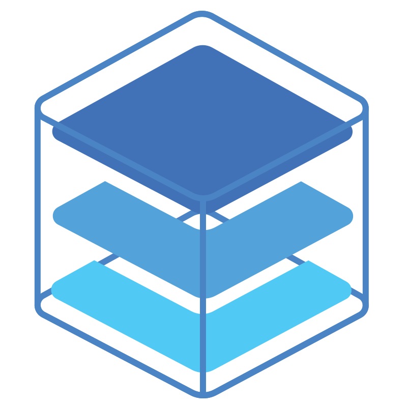
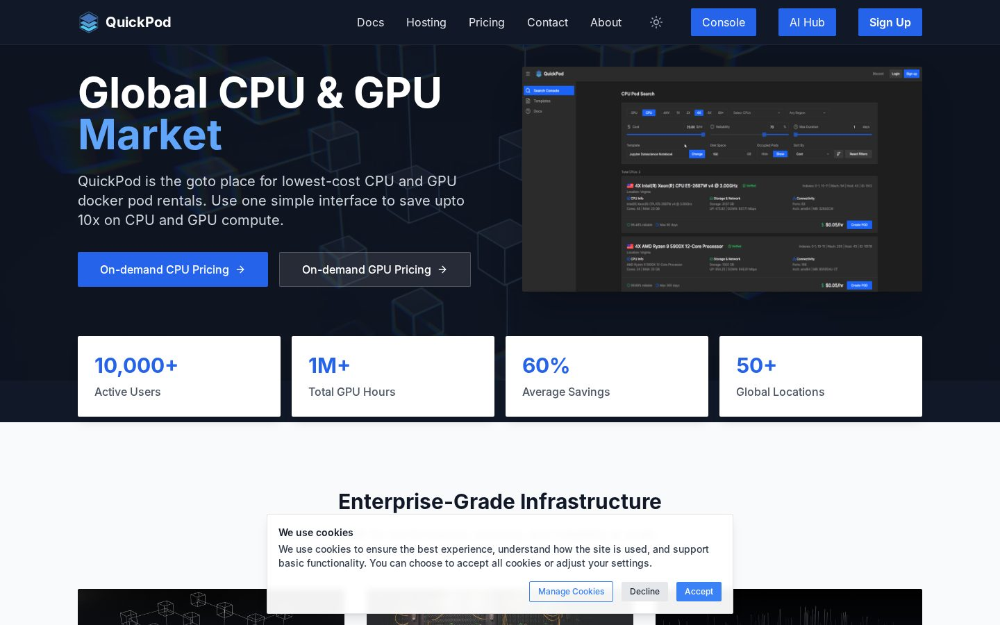
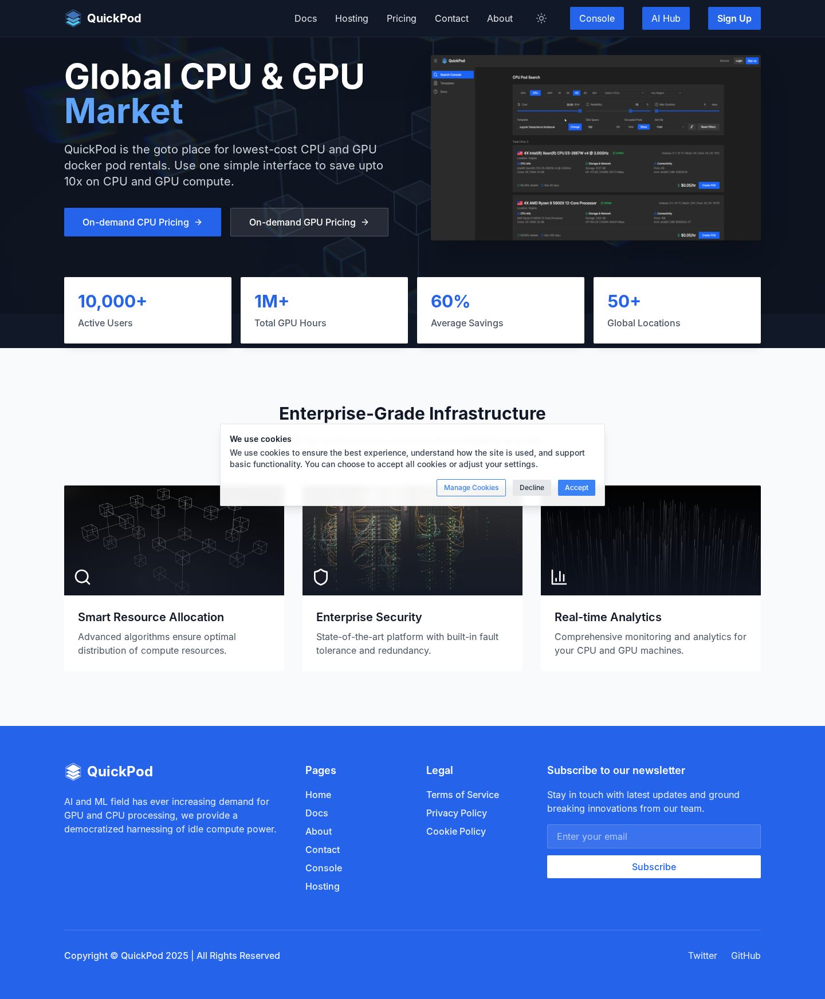
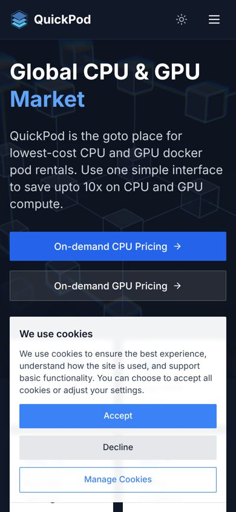

QuickPodquickpod.io Open quickpod.ioAffordable GPU and CPU rentals
QuickPod is the go-to place for the lowest-cost CPU and GPU Docker pod rentals: one simple interface to save up to 10x on compute, with Jupyter ready for TensorFlow, PyTorch or any other AI framework.

10,000+active users
1M+GPU hours
60%average savings
50+global locations
What QuickPod does
Global CPU and GPU market
On-demand pricing for CPU and GPU pods, rented by the hour from providers around the world.
Smart resource allocation
Advanced algorithms distribute compute so that every workload lands on the right hardware.
Enterprise security
A state-of-the-art platform with built-in fault tolerance and redundancy.
Real-time analytics
Comprehensive monitoring of your CPU and GPU machines while they run.
Ready for AI and ML
Jupyter, TensorFlow, PyTorch and any framework you bring, on democratised idle compute power.
Docs, hosting and console
Documentation, hosting options and a web console for the whole lifecycle of a pod.
Screens

